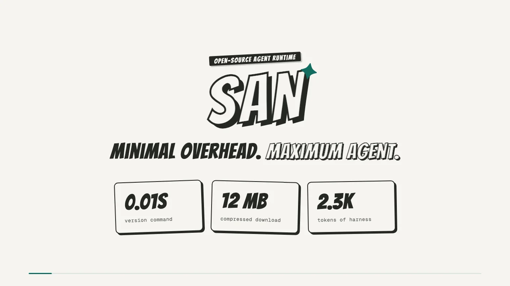

01轻量高效

为什么选 San
精简框架，把空间留给任务。
轻量是基础，灵活适配你的工作。提供 Agent 所需的核心能力，不替你规定工作方式。
02自主配置
03多 Agent 协作
一个任务，不止一个 Agent。
委派子 Agent，跨会话传递消息，组织动态工作流。分工推进，保持任务脉络。
/group
04可控可见
决定能做什么，看清做了什么。
配置执行权限，检查模型上下文和工具调用。由你决定 Agent 的行动范围，事后查看运行过程，不必靠猜。
Shift+Tabsan inspector
基准测试
轻量运行时，有数可依。
在 Apple Silicon 上对比 Claude Code，使用相同模型（claude-sonnet-4-6）和任务。结果对应下方列出的测量版本。
| 指标 | San | Claude Code | 对比 |
|---|---|---|---|
| 下载大小 | 12 MB | 63 MB + Node 112 MB | 约 1/5¹ |
| 磁盘占用 | 38 MB | 175 MB | 约 1/4.6 |
启动时间（version） | ~0.01 秒 | ~0.20 秒 | 约 1/20 |
| 启动内存 | ~32 MB | ~189 MB | 约 1/5.8 |
| 简单任务 | ~2.4 秒 / 39 MB | ~10.4 秒 / 286 MB | 耗时约 1/4.3 |
| 工具调用任务 | ~3.3 秒 / 39 MB | ~26.0 秒 / 285 MB | 耗时约 1/7.9 |
| 框架上下文² | ~2.3k token | ~20.9k token | 约 1/9 |
任务数据为打印模式的总耗时 / 峰值 RSS；网络与 API 延迟会影响结果。启动数据测量 version 命令，并非进入交互界面的时间。¹ 下载体积的比值不包含额外的 Node 运行时。² 框架上下文指空白首轮的系统提示词 + 工具 schema，单独使用 San v1.22.0 与 Claude Code v2.1.220 测量。其余各行来自 San v1.13.2 / Claude Code v2.1.112 的测试。测量方法与复现 →
社区
一起构建 San。
交流工作流，提出问题，参与 San 的发展。
微信
关注公众号「极客外传」· 回复 san 或 三 入群